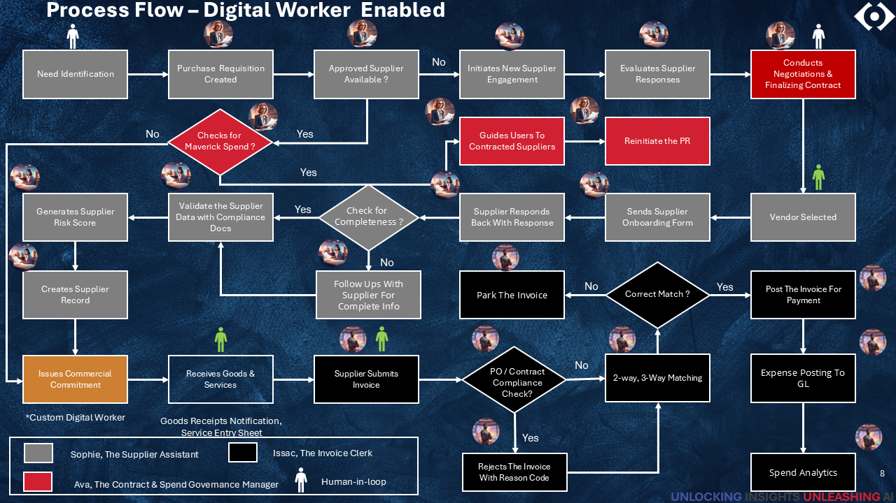

Procure-to-Pay Transformation
AI-Driven Procurement Automation
Empowering CFOs with Efficiency, Control and Visibility
The Hidden Cost of Outdated Procurement
When spend is invisible, control breaks down — and value erodes silently across the organization.
Visibility Gaps
- Fragmented purchasing across departments
- No centralized spend data
- Invisible tail spend (20–40% of spend)
- Weak financial reporting
Control Breakdowns
- Maverick spending left unchecked
- Contract non-compliance
- Decentralized buying decisions
- Negotiated savings not realized
Operational Inefficiencies
- Fragmented supplier base
- High invoice processing costs
- Slow procurement cycles
- Growing operational overhead
Financial Value Erosion
- Missed consolidation opportunities
- Suboptimal supplier pricing
- Inaccurate budgeting and forecasting
- Reduced procurement ROI
Net Business Impact: Higher costs • Financial leakage • Reduced leverage • Limited strategic contribution
Unlocking Transformation using Hybrid Workforce
Human + Agentic AI Digital Workers
RECODE: End-to-End Procurement Intelligence Workforce
From transaction processing to intelligent procurement — a framework that
digitises, governs, and optimises every stage of the procurement lifecycle.
Digitise & Standardise
PR → PO → GRN → Invoice → Payment automation with ERP integration
Spend Visibility
Enterprise dashboards, tail spend identification, and category tracking
Governance & Contracts
Guided buying, contract repository, and rogue spend prevention
From Sourcing Intelligence to Predictive Procurement
The final pillars elevate procurement from operational execution
to strategic, AI-driven decision making.
Strategic Sourcing
- Demand aggregation
- Cost benchmarking
- Market & price intelligence
- Total cost of ownership decisions
Supplier Intelligence
- Supplier performance scorecards
- SLA monitoring
- Risk and disruption alerts
AI-Driven Insights
- Spend anomaly detection
- Rogue spend identification
- Predictive cost forecasting
- Savings opportunity identification
Digital Worker-Enabled Procure-to-Pay
Governed • Intelligent • Compliant Financial Control Architecture
1. Requisition & Approval
- Need identification
- Purchase requisition
- Budget validation
- Approval workflow
Maverick Spend Prevention
2. PO & Commitment
- Approved supplier selection
- PO creation
- Contract validation
- PO dispatch
PO / Contract Compliance
3. Invoice & Matching
- Invoice submission
- Invoice capture
- 2/3-way matching
- Exception management
Matching Accuracy Control
4. Payment & Posting
- Invoice approval
- Payment processing
- GL posting
- Spend analytics
Payment Authorization
Digital Intelligence Layer
Governance & Spend Control Engine
- Maverick detection
- Policy enforcement
- Budget controls
- Contract adherence
Supplier & Compliance Engine
- Supplier validation
- Risk scoring
- Compliance checks
- Master data control
Invoice & Matching Engine
- Invoice extraction
- Matching automation
- Duplicate detection
- Exception routing
Process Flow – Digital Worker Enabled

The Financial Case for Procurement Excellence
Margin Expansion
- 2–4% EBITDA improvement
- 3–5% structural cost reduction
- 5–15% savings in indirect categories
Direct P&L Impact
- 2–5% reduction in procurement spend
- 15–30% operating efficiency gain
- 30–50% lower invoice processing cost
Cost Leakage Control
- 30–60% reduction in maverick spend
- 20–40% better contract compliance
- 5–15% unmanaged spend addressed
Working Capital
- 5–15 day payment cycle optimization
- 10–20% working capital efficiency
- 40–60% faster invoice cycle times
Supplier Optimisation
- 3–8% savings via consolidation
- 10–20% reduction in vendor base
Higher Margins • Stronger EBITDA • Improved Cash Flow • Reduced Earnings Volatility
Start Your Procurement Transformation
Unlock efficiency, financial control, and intelligent procurement
with a Digital Worker–enabled Procure-to-Pay platform.
Pilot Program
Launch a focused Procure-to-Pay pilot covering
contract compliance, PR, PO, Invoice and Payment workflows.
Rapid Evaluation
2–3 week engagement using sample transactions
to demonstrate automation and intelligence.
Measured Business Impact
Identify savings opportunities, efficiency gains,
and financial governance improvements.
recodesolutions.com • info@recodesolutions.com